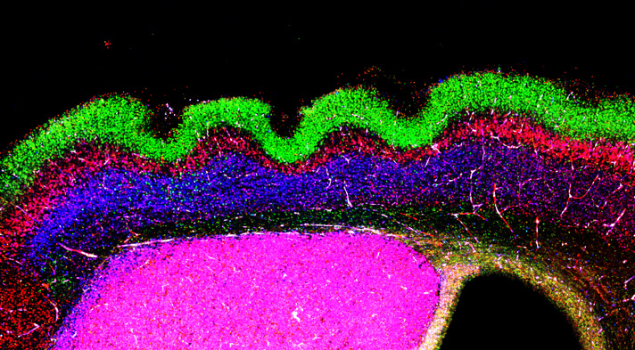

DANIEL DEL TORO
Mecanismes de migració i proliferació neuronal que condueixen a l'plegament de l'escorça cerebral.
NEURODESENVOLUPAMENT CORTICAL
Resum de la recerca
L'escorça cerebral és la regió més recent evolutivament de el cervell i el centre d'habilitats cognitives superiors com el llenguatge. Durant el desenvolupament, dos esdeveniments coordinats donen forma a la seva morfologia, el que condueix a l'estructura columnar i en capes de l'escorça: la proliferació de progenitors neuronals i la migració cortical. L'objectiu del nostre laboratori és comprendre com aquests dos processos també contribueixen a l'expansió i plegat d'aquesta estructura. Utilitzem experiments de perfils d'expressió, línies de ratolins condicionals, assaigs funcionals in vitro i in vivo juntament amb tècniques d'imatge avançades per determinar els mecanismes moleculars implicats en el plegament de l'escorça. Actualment estem interessats a examinar el paper de les proteïnes sinàptiques durant la migració cortical i l'impacte de l'plegament de l'escorça en el comportament i la intel·ligència dels animals.
Línies estratègiques
- Mecanismes moleculars implicats en la dispersió lateral de neurones corticals.
- Reprogramació in vivo durant el desenvolupament de l'escorça cerebral.
- Inducció de l'plegament de l'escorça en animals que normalment tenen una escorça llisa com els ratolins